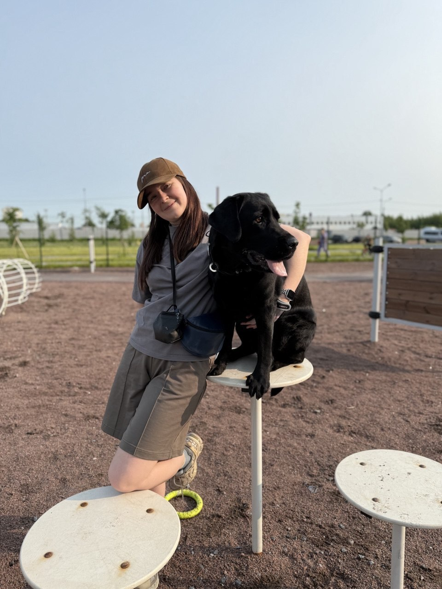

Обо мне
👋 Привет! Я Анжелика, и мой профессиональный путь демонстрирует, как разнообразный опыт может стать преимуществом в IT.
Начинала как физик
Исследовала мощные лазеры на гетероструктурах, что развило аналитическое мышление и внимание к деталям.
Автоматический тестировщик на Java
Перенесла любовь к точности в IT, обеспечивая качество программного обеспечения через автоматизированное тестирование.
Осваиваю веб-разработку
Открываю для себя творческую сторону программирования, создавая визуально привлекательные и функциональные интерфейсы.
Мой бэкграунд не связан напрямую с веб-разработкой, но именно это делает мой взгляд уникальным — я сочетаю научный подход физика, дотошность тестировщика и страсть к созданию красивых интерфейсов.
Мои источники вдохновения:
Моя собака Робин, которая не только стала музой для моего первого проекта, но и ежедневно напоминает о важности perseverance и любви к своему делу.
Санкт-Петербург — город, где я живу и который напоминает, что прекрасное должно быть и функциональным.
Радость от создания чего-то нового своими руками, что приносит удовлетворение и мотивирует развиваться дальше.
💡 Этот сайт — мой первый проект в веб-разработке, и для меня это начало нового захватывающего пути, где я могу объединить все свои навыки и passions.

Мои проекты

Robin Project
Интерактивный проект, в которым вы можете рандом получить милую фотокарточку с Робушкой, а также предсказание этого дня!✨ Проверь, что она тебе сегодня нашептала.
Посмотреть проект